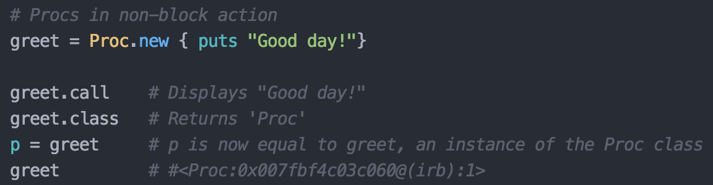

Blocks, Procs, and Lambdas
Similarly Dissimilar Ways to Pass Chunks of Code
Sunday, June 28, 2015
By now you have probably dealt with a fair number of blocks. Maybe you didn't know that's what they were called, but as you will shortly see, they've been there at least since week 3. You might not have dealt with procs and lambdas yet, but perhaps after reading this, you will see some of the useful ways you might do just that.
Let's begin with a brief introduction to all three types via the joys of visualization
Looking at this you might be thinking, "Ok, I see some difference with blocks, but what's up with the procs and lambdas being the same?" Given our relatively short time with Ruby, no one would blame you for thinking this. If the differences were too clear, there wouldn't really be a point to this post, now would there? Let's briefly go over some of the differences between blocks and procs before we move onto the more subtle differences between procs and lambdas.

Above we can see some of the ways in which you can interact with a proc. Procs are instances of the Proc class, which means that they are themselves objects. Because of this, we can calls methods on them such as #call and #class as well as assign variables to reference them. Back to our old friend, block...
As you can see, blocks aren't autonomous. If left on their own, all they are capable of is showing you some of Ruby's lovely error syntax. Put them in a method call though, and they offer you all kinds of great functionality. Unfortunately, blocks also come up lacking when compared to procs, if you are thinking about using them in method arguments. Only one block at a time may be put into a method argument, but as you will see below, this rule doesn't apply to procs.
Currently, the usefulness of this is dubious to me, but I am sure that it will come in handy in the future. Perhaps when making sure my code is extra DRY (though possibly then unreadable consequently). Moving on! Time to take the aforementioned look at procs and lambdas.
Sooooo...yeah. Now that we're super clear on the multitude of differences between these two, my job here is done! I look forward to reviewing your code and seeing the various ways in which you used both in their proper way. No? Still think they are nearly identical, outside of the minor syntactical difference used to create them? Good, that means MORE CODE PICTURES!!!
Ah-ha! At last, we start to see a little bit of differentiation. Procs don't care how many arguments you want them to have. They'll take as many, or as few, as you give them. Give them less than you set them up to take and they'll fill in the blanks with nil. Give them more, and they'll just smugly ignore the extras as if they were too good for them. Lambdas, on the other hand, much like methods, actually care about the number arguments expected and how many they are sent. Send them the wrong amount and you'll see the likely familiar ArgumentError: wrong number of arguments (my favorite!). Finally, another way in which the two differ is in how they handle an explicit return. I won't go into this in too much detail as I think it is currently beyond the scope of our mastery level, but here it is in code picture format(had to get one more in):
What's going on here? In general, Ruby's syntax does not allow for arguments that include the keyword return. This causes the example with the Proc to raise an error because it does just that, includes return. Lambdas can sneak by this requirement because they are handled more like methods which are, of course, allowed to have an explicit return. This leads into another difference between the two, regarding return. I'll spare you another code example and just briefly touch on it. Since an instance of the Proc class is basically just a fancy block of code, if it contains an explicit return, it will exit out of whatever method it was executing within (just like a block with a return would). Since lambdas are treated more like methods, their returns don't kick you out of the method you are in, but instead just exit out of that lambda call. This diminutive return allows for multiple lambda calls within a method, or other code to execute after a lambda call returns a value (as seen above).
Well, there you have it! Block, procs, and lambdas. Don't worry if you aren't chomping at the bit to inject them in every bit of code you write from this moment on. It seems to me that they are something that takes some practice to really get the hang of, as well as subject to a bit of a stylistic preference. Regardless, I hope you have enjoyed this and I look forward to someday seeing a number of these in your code!